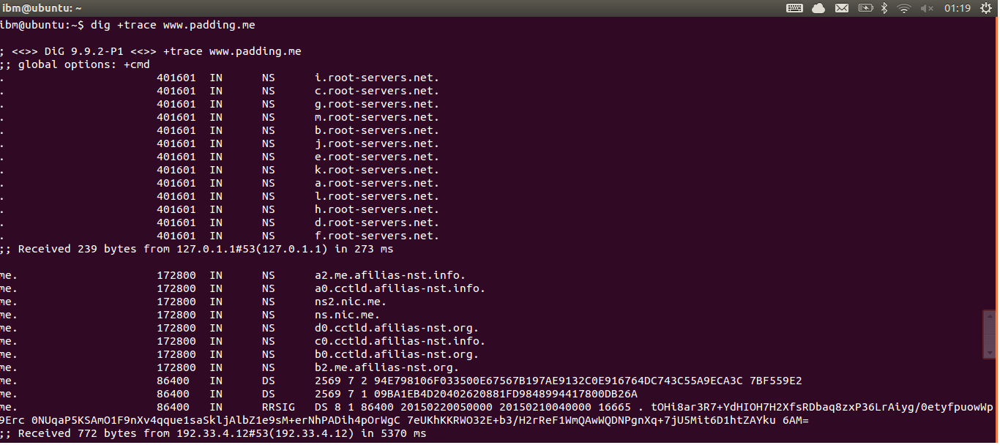
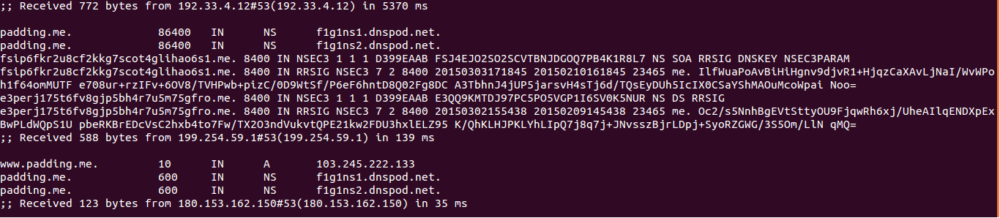

The ABC of Front-end Web Development
PaddingMe
2015-02-11
Some Tips
由于个人经验，能力，知识面，以及 身高 有限，
说得不对、未说明白、有疑问的地方，请随时打断我。
但是，请不要扔臭鸡蛋，和烂茄子。
因为，我比较喜欢吃菠菜和香蕉。 =.=

Awesome Front-end Works
CSS3 Cassette Tape
NodeJS(ioJS)

Node.js 是一个在浏览器外部创建互联网应用程序的框架，基于 Google 开发的 V8 JavaScript 引擎，轻量，高效，事件驱动，非阻塞I/O，特别适合运行于跨分布式设备的实时数据处理程序。
纯 CSS 实现打地鼠游戏
无后端服务


还有...
- HTML5 游戏
- Hybrid APP--->Web APP
- 前端工程化
- ...
后端同学你怕不怕？

没学的前端同学，还在想什么？
What Happens When You Type in a Url in Browser ?
1. 在浏览器里输入要网址

http://www.padding.me
- 传送协议： http/ftp/smtp
- 端口号： 80（HTTP）
- 网络地址（域名/IP地址）: www.padding.me
- 资源路径：/

http://www.padding.me
- 根域名(ROOT) : .
- 顶级域名：padding.me (
www.padding.me) - 二级域名： test.www.padding.me
- 域名服务器（权威服务器）
- A记录（Address）
- NS记录（name server）
- CNAME
2. DNS 查询

DNS 查询过程
- 浏览器缓存
- 系统缓存
- 路由器缓存
- ISP DNS 缓存
- 进行递归搜索
DNS 递归查询
DNS 递归查询
DNS 递归查询

3. 建立 TCP 链接


TCP 三次握手
---> 「你瞅啥？」
「瞅你咋地？」 <----
-->「来咱俩唠唠。」
然后就唠上了。
4. 发起 HTTP 请求


- request line：GET /index.html HTTP/1.1
- header：User-Agent:XXX/Accept：XXX/Host：XXX
- 空行
- 请求数据：POST 方法中使用。
HTTP响应报文：状态行、消息报头、响应正文。
状态行: HTTP-Version Status-Code Reason-Phrase CRLF

5. HTML 页面加载、解析
- 拿到 html 文件
- head 标签内有 link 外部 CSS 文件
(发起请求，返回CSS文件) - body 部分开始渲染
- img 请求，继续渲染下面的元素
- 重排/重绘
- JS 执行
- 非严格按照上述顺序执行，主要看 js，css 外部文件
的位置和对布局的改变情况
来个 DEMO
5.1 HTML head 头结构
Read More： HTML head 头标签
5.2 浏览器的渲染原理
5.2.1 浏览器大致工作过程

5.2.2 DOM解析


5.2.3 CSS解析


CSS 匹配 HTML元素是一个相当复杂和有性能问题的事情。
所以，你就会在N多地方看到很多人都告诉你，DOM树要小，CSS尽量用 id 和 class，千万不要过渡层叠下去，……
5.2.4 渲染

- 计算CSS样式
- 构建Render Tree
- Layout
- 正式开画
- Repaint:屏幕的一部分要重画，比如某个CSS的背景色变了。但是元素的几何尺寸没有变。
- Reflow:意味着元件的几何尺寸变了，需要重新验证并计算Render Tree。
- 增量异步 Reflow: 浏览器会把这样的操作积攒一批，做一次reflow，这又叫。
- Reflow 的成本比 Repaint 的成本高得多的多。
什么时候会发生 Repait？
- Initial：网页初始化的时候；
- Incremental：一些 Javascript 在操作 DOM Tree时；
- Resize：其些元件的尺寸变了；
- StyleChange：如果 CSS 的属性发生变化了；
- Dirty：几个 Incremental 的 reflow 发生在同一个 frame 的子树上。
减少Reflow/Repaint
- 1）不要一条一条地修改DOM的样式。与其这样，还不如预先定义好css的class，然后修改DOM的className
- 2）把 DOM 离线后修改
- 3）不要把 DOM 结点的属性值放在一个循环里当成循环里的变量
- 4）尽可能的修改层级比较低的 DOM
- 5）为动画的 HTML 元件使用 fixed 或 absoulte 的 position
- 6）千万不要使用 table 布局
5.3 HTML & CSS & JavaScript

结构、表现、行为分离：
HTML 是名词，CSS 是形容词和副词，JavaScript 是动词。
盒子模型

HTML 标签 / CSS 属性
display
- display:block
- display:inline
- display:inline-block
- ...
CSS 优先级
外部样式 <内部样式 <内联样式

CSS 优先级法则：
- 选择器都有一个权值，权值越大越优先；
- 当权值相等时，后出现的样式表设置要优于先出现的样式表设置；
- 创作者的规则高于浏览者：即网页编写者设置的CSS 样式的优先权高于浏览器所设置的样式；
- 继承的CSS 样式不如后来指定的CSS 样式；
- 在同一组属性设置中标有“!important”规则的优先级最大。
定位
- position: static
- position: relative
- position: fixed
- position: absolute
- z-index
浮动
布局
=====》学习CSS布局
没有谈到的内容
- 操作系统/计算机组成
- 重定向
- CDN
- Ajax
- 代理
- HTTPS
- 移动端又怎么样？
- More...
那么输入一个 URL 地址到底发生了什么
- 输入 地址
- DNS 查询
- TCP 连接
- HTTP 请求
- HTML 页面加载/渲染
一些启示：
- 知其然，知其所以然；
- 遵从标准/最佳实践
- Yahoo 优化网站性能 14条
Yahoo 优化网站性能 14条
| 1. 尽可能的减少 HTTP 的请求数 | [content] |
| 2. 使用 CDN（Content Delivery Network） | [server] |
| 3. 添加 Expires 头(或者 Cache-control ) | [server] |
| 4. Gzip 组件 | [server] |
| 5. 将 CSS 样式放在页面的上方 | [css] |
| 6. 将脚本移动到底部（包括内联的） | [javascript] |
| 7. 避免使用 CSS 中的 Expressions | [css] |
| 8. 将 JavaScript 和 CSS 独立成外部文件 | [javascript] [css] |
| 9. 减少 DNS 查询 | [content] |
| 10. 压缩 JavaScript 和 CSS (包括内联的) | [javascript] [css] |
| 11. 避免重定向 | [server] |
| 12. 移除重复的脚本 | [javascript] |
| 13. 配置实体标签（ETags） | [css] |
| 14. 使 AJAX 缓存 | [content] |
Reference
- 从输入 URL 到页面加载完成的过程中都发生了什么事情？
- 从输入网址到显示页面：浏览器工作原理拆解分析
- How Browsers Work: Behind the scenes of modern web browsers
- What happens when...
- what happens when you type in a URL in browser
- What happens when you type a URL in browser
- How Does the Internet Work?
- 当你输入一个网址，实际会发生什么?
- 浏览器的渲染原理简介
- 专题：浏览器:渲染重绘、重排两三事
- 浏览器加载和渲染HTML的顺序以及Gzip的问题
- http://div.io/topic/591
- http://div.io/topic/736
- http://div.io/topic/811
- More and more
Fuck (干) Things (货), Take away!
前端资源推荐
Q & A
<thank-you>
Powered By reveal.js